Tactile perception has the potential to significantly enhance dexterous robotic manipulation by providing rich local information that can complement or substitute for other sensory modalities such as vision. However, tactile sensing is an inherently local sensor modality, providing information only at the points of contact. This strict locality necessitates the use of active perception techniques to acquire useful, task-relevant information from manipulated objects or the environment in general. Hence, the agent must actively guide sensors toward regions with more informative or significant features and integrate such information over time in order to understand a scene or complete a task. However, while active perception and tactile sensing methods have received significant attention recently, both fields lack standardized benchmarks. To bridge this gap, we introduce the Tactile MNIST Benchmark Suite, an open-source, Gymnasium-compatible benchmark specifically designed for active tactile perception tasks, including localization, classification, and volume estimation. Our benchmark suite offers diverse simulation scenarios, from simple toy environments all the way to complex tactile perception tasks using vision-based tactile sensors. Furthermore, we also offer a comprehensive dataset comprising 13,580 synthetic 3D MNIST digit models and 153,600 real-world tactile samples collected from 600 3D printed digits. Using this dataset, we train a CycleGAN for realistic tactile simulation rendering. By providing standardized protocols and reproducible evaluation frameworks, our benchmark suite facilitates systematic progress in the fields of tactile sensing and active perception in general.
The Tactile MNIST benchmark provides eight simulated active tactile perception tasks ranging from classification and counting to pose, volume, and center of mass estimation. In every task, the agent controls a simulated GelSight Mini sensor and receives no visual input, so it has to infer the required property from touch alone. In ABCCenterOfMass, ABCVolume, and both PrimitiveGeometries tasks, the agent can also rotate the sensor, e.g., to touch the sides of an object. Each task comes with a unique set of challenges and, thus, Tactile MNIST requires adaptive algorithms and clever exploration strategies. The aim of these benchmark tasks is to provide an extensible framework for a fair comparison of active tactile perception methods. All tasks are implemented as ap_gym environments, which is a Gymnasium-compatible framework for active perception tasks.
Identify which object is present, or how many of them, from touch alone.
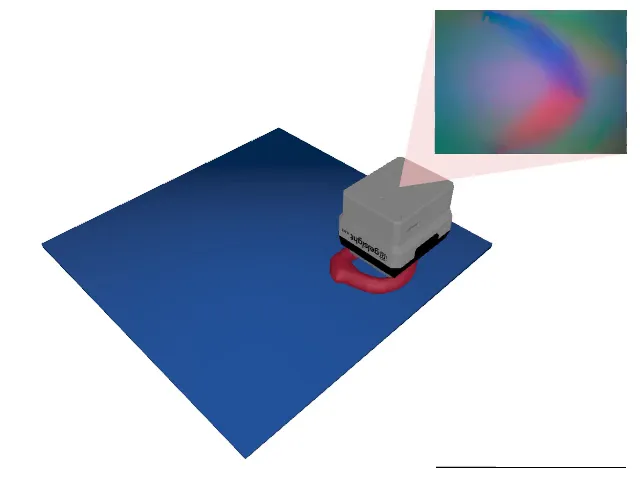
Classify 3D models of handwritten digits by touch, which requires contour following.
The agent's objective is to classify 3D models of handwritten digits by touch alone. Aside from finding the object, the main challenge in the TactileMNIST environment is to learn contour following strategies to efficiently classify it once found. Object pose perturbation is enabled, meaning that the object shifts around slightly while being touched.
Docs →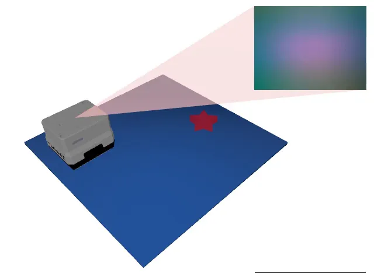
Count the stars in a scene cluttered with other objects.
The agent must count the number of stars in a scene cluttered with other objects. Since all stars look the same, distinguishing stars from other objects is rather straightforward. The main challenge is to learn an effective search strategy to systematically cover as much space as possible.
Docs →Tell apart four geometric primitives whose sizes overlap.
The agent must tell apart four geometric primitives: cylinders, cuboids, triangular prisms, and half cylinders. Since their dimensions are drawn at random, the classes overlap in size. Some parts of an object are shared by several classes, while others are unique to one, so the agent has to find the parts that tell the classes apart.
Docs →Find an object and regress where it lies or where its mass is centered.
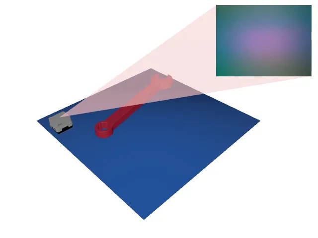
Find a wrench and estimate its 2D position and orientation.
The agent's objective is to locate a wrench positioned randomly on a platform and estimate its precise 2D position and 1D orientation. Unlike the previous classification tasks, Toolbox poses a regression problem that requires combining multiple touch observations to resolve ambiguities inherent in the wrench’s shape.
Docs →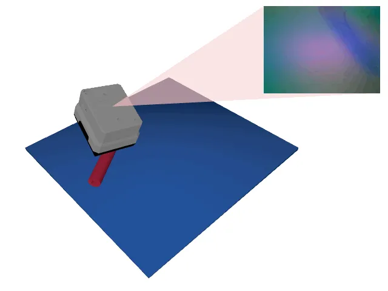
Estimate the center of mass of an unknown CAD model.
The agent's objective is to locate an object from the ABC dataset and estimate its 2D center of mass projected onto the platform. Unlike in Toolbox, the object shape is unknown in every episode, so the agent has to both find and thoroughly explore it.
Docs →Estimate an object's volume, which requires measuring its shape by touch.
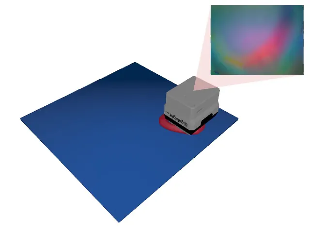
Estimate the volume of 3D models of handwritten digits.
The agent's objective is to estimate the volume of 3D models of handwritten digits by touch alone. Aside from finding the object, the main challenge is to learn contour following strategies to efficiently explore it once found.
Docs →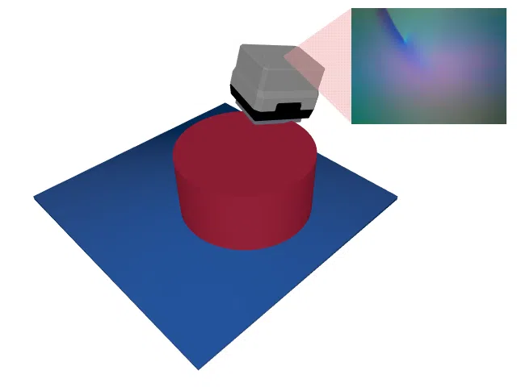
Estimate the volume of a geometric primitive with a few well-placed touches.
The agent's objective is to estimate the volume of a geometric primitive: a cylinder, a cuboid, a triangular prism, or a half cylinder. Since the objects are simple, a few well-placed touches suffice: the agent has to find out the shape of the object, measure its footprint, and determine its height.
Docs →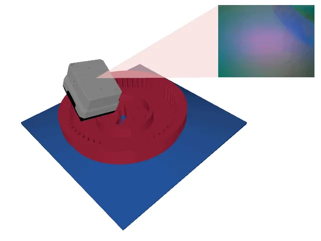
Estimate the volume of complex industrial CAD models.
ABCVolume is a harder version of PrimitiveGeometriesVolume: the agent's objective is to estimate the volume of realistic industrial CAD models from the ABC dataset by touch alone. These objects are much more complex and diverse in shape than geometric primitives, so a few touches no longer suffice and the agent has to adapt its exploration to each object.
Docs →All Tactile MNIST tasks are built on ap_gym, a Gymnasium-compatible framework for active perception. In ap_gym, the agent has to make a prediction in every step, and each environment comes with a differentiable loss function that scores this prediction. In addition to the tactile tasks, ap_gym ships a set of lightweight toy environments that abstract away contact models and dynamics. They enable rapid prototyping of active perception strategies, but despite their simple appearance, they pose significant challenges due to partial observability and delayed action payoffs.
Classify an image by moving a small glimpse that never shows the full image at once.
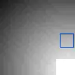
Find the object and decide whether it is a circle or a square.
The agent moves a 5×5 glimpse over a 28×28 grayscale image and must decide whether it shows a circle or a square. A color gradient guides it towards the object. The main challenge is the sparse reward: the agent must take many steps before gaining any information.
Docs →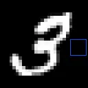
Classify handwritten digits, which requires contour following.
The agent moves a 5×5 glimpse over a 28×28 handwritten digit and predicts one of 10 classes within 16 steps. It receives information more quickly than in CircleSquare, but always sees an incomplete picture, so it must learn contour following to gather enough information.
Docs →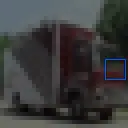
Classify natural images into 10 categories.
The agent explores a 32×32 RGB image through a 5×5 glimpse and predicts one of 10 classes within 16 steps. Compared to MNIST, the data is much more diverse and complex.
Docs →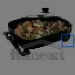
Classify larger natural images into 200 categories.
The agent explores a 64×64 RGB image through a 10×10 glimpse and predicts one of 200 classes within 16 steps. The larger images and the greater number of classes require more sophisticated exploration strategies.
Docs →Find where a given target patch is located within a larger image.
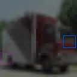
Localize a 5×5 patch in a 32×32 CIFAR10 image.
The agent sees its current 5×5 glimpse and the target patch, moves the glimpse across a 32×32 CIFAR10 image, and predicts the target's 2D position in every step. Limited visibility forces a strategic search to reduce the localization error.
Docs →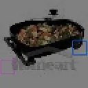
Localize a 10×10 patch in a 64×64 TinyImageNet image.
The same task as CIFAR10Search, but the agent must localize a 10×10 patch in a 64×64 TinyImageNet image. The greater resolution and diversity make localization more challenging.
Docs →Estimate the agent's own position. Here, the agent changes the very quantity it predicts by moving.
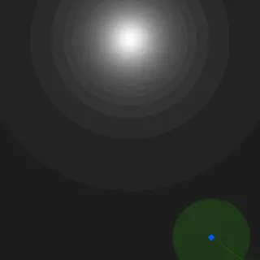
Observation noise depends on brightness, so the agent must find the light to localize itself.
The agent moves in 2D, observes a noisy estimate of its own position, and predicts its true position. The noise is low in bright and high in dark areas, so the agent must learn to move towards the light without knowing where it is, facing uncertainty about both its prediction and the outcome of its actions.
Docs →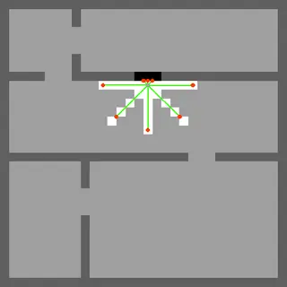
Localize with 8 LIDAR beams in open rooms, where readings are often uninformative. A static map variant is also available.
The agent observes 8 LIDAR distance readings, odometry, and the map, and predicts its own position. In the middle of large rooms, the LIDAR often returns no information, so it must navigate to gather some. The layout changes every episode, so the agent has to learn to process the map; in LIDARLocRoomsStatic, the map stays fixed and can be memorized.
Docs →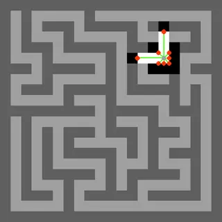
Localize in narrow mazes where many regions look alike. A static map variant is also available.
The agent observes 8 LIDAR distance readings, odometry, and the map, and predicts its own position in a maze of narrow corridors. It always receives LIDAR readings, but many regions look alike. The maze is procedurally generated every episode; in LIDARLocMazeStatic, it stays fixed and can be memorized.
Docs →In addition to the benchmark tasks, Tactile MNIST provides two large datasets: MNIST 3D and the Real Tactile MNIST Dataset. The former is a dataset of 3D models of hand-written MNIST digits, which are used in the TactileMNIST and TactileMNISTVolume environments. The latter is a dataset of real-world tactile interactions with 3D-printed MNIST 3D objects, which we use to train a CycleGAN for realistic tactile simulations. Both datasets are available on Huggingface. To access them, check out our GitHub repository.
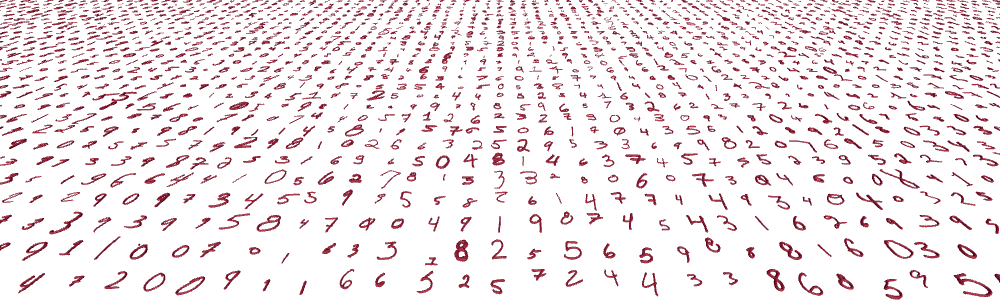
13,580 3D-printable meshes of handwritten digits.
MNIST 3D is a collection of 13,580 auto-generated 3D-printable meshes of handwritten digits, derived from a high-resolution MNIST variant and scaled to fit in a 10 × 10 cm square. The digits vary strongly in shape and size within each class, while the dataset is large enough to learn from data. Since single segments of a digit are usually ambiguous, a single touch is rarely enough to classify it, so the agent needs a strategy such as contour following.
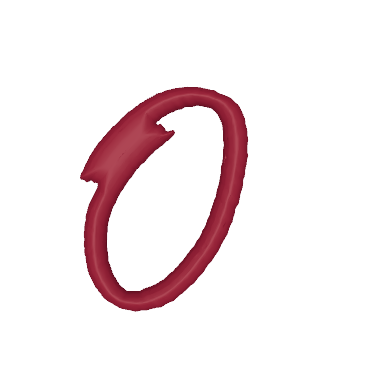
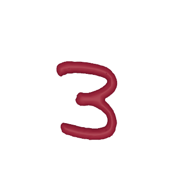
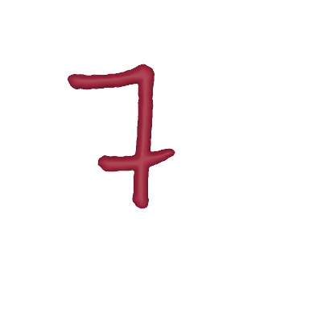
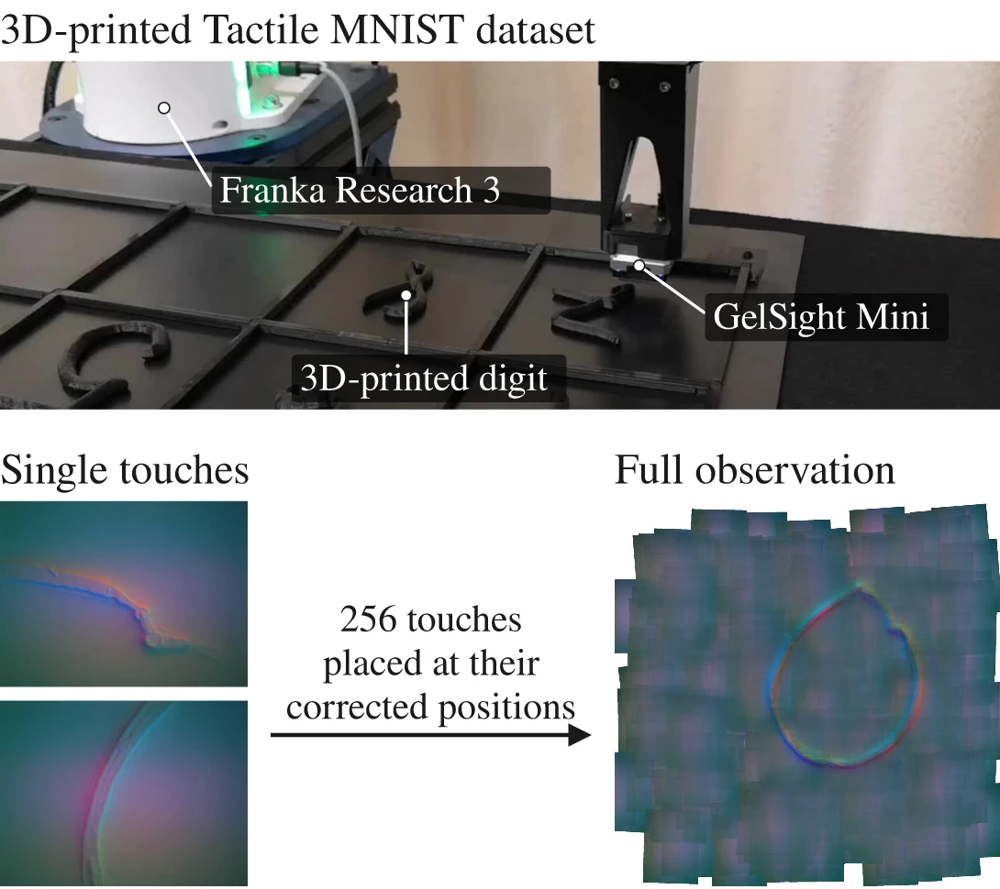
153,600 real touches of 600 3D-printed digits, recorded with a GelSight Mini.
The Real Tactile MNIST Dataset contains 153,600 touches of 600 3D-printed MNIST 3D digits, 256 per digit, recorded with a GelSight Mini sensor mounted on a Franka Research 3 robot that pressed the sensor down at random locations in each digit's cell. Unlike in simulation, an agent learning from this data has to deal with real sensor noise and the gradual degradation of the sensor's gel, which makes it a challenging testbed.
Datasets →Using the Real Tactile MNIST Dataset, we train a CycleGAN to produce realistic tactile images in simulation. This allows for sim-to-real transfer and realistic training environments.
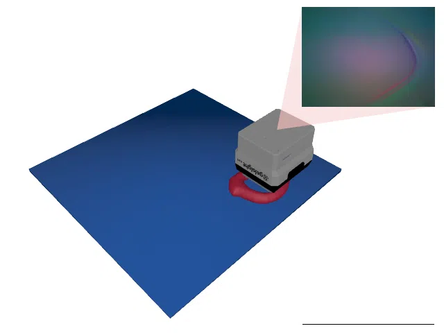
TactileMNIST with realistic tactile images rendered by a CycleGAN.
The same task as TactileMNIST: classify 3D models of handwritten digits by touch alone. Instead of Taxim, a CycleGAN trained on the Real Tactile MNIST Dataset renders the tactile images, so the agent receives observations that resemble those of a real GelSight Mini sensor. A variant with domain randomization is also available.
Docs →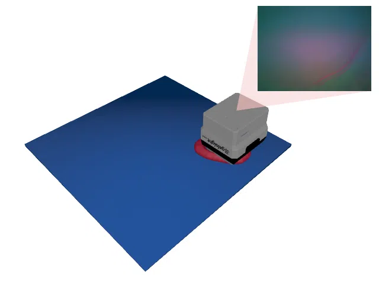
TactileMNISTVolume with realistic tactile images rendered by a CycleGAN.
The same task as TactileMNISTVolume: estimate the volume of 3D models of handwritten digits by touch alone. Instead of Taxim, a CycleGAN trained on the Real Tactile MNIST Dataset renders the tactile images, so the agent receives observations that resemble those of a real GelSight Mini sensor. A variant with domain randomization is also available.
Docs →If you use Tactile MNIST or ap_gym in your research, please cite our NeurIPS 2026 paper:
@inproceedings{schneider2026tactile,
title = {Tactile {MNIST}: Benchmarking Active Tactile Perception},
author = {Schneider, Tim and Duret, Guillaume and de Farias, Cristiana and
Calandra, Roberto and Chen, Liming and Peters, Jan},
booktitle = {Advances in Neural Information Processing Systems (NeurIPS)},
year = {2026}
}